Confecção & Detalhamento
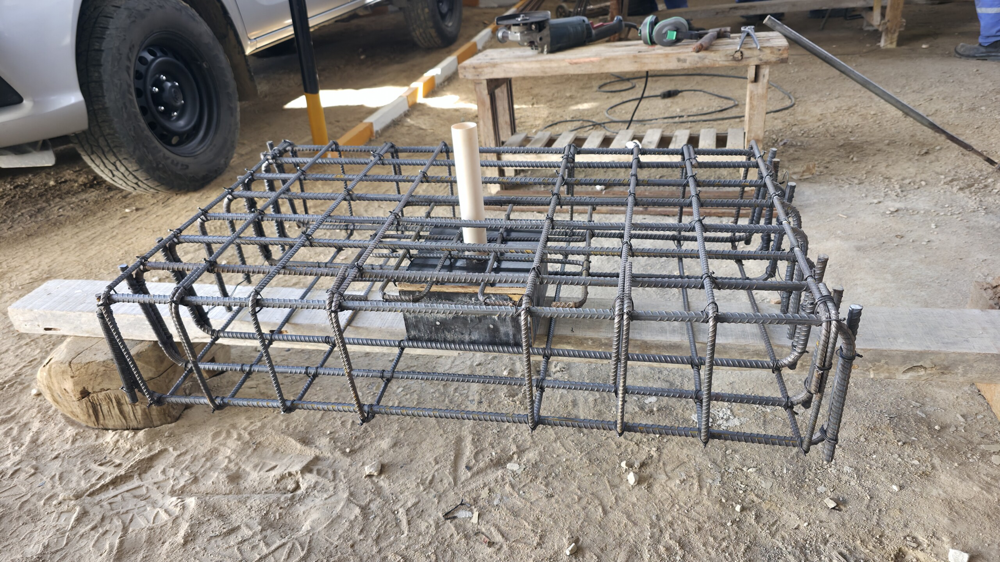
armadura tipo gaiola
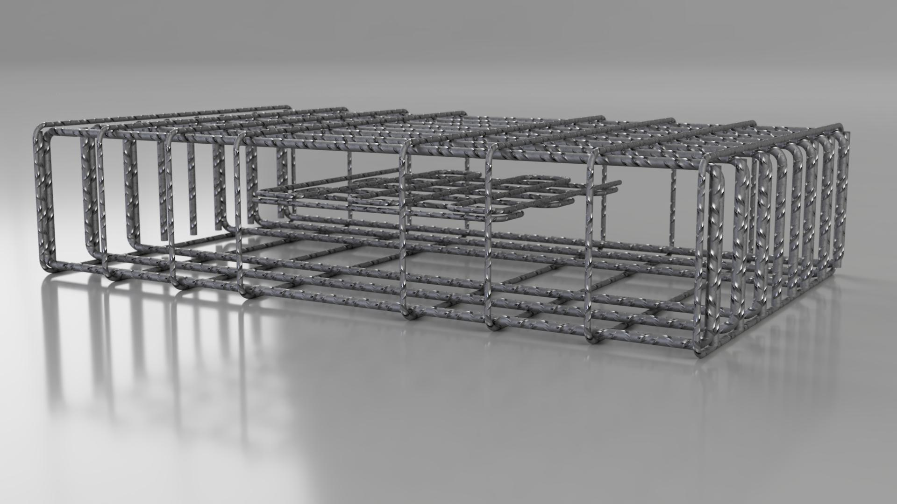
representação 3D da gaiola
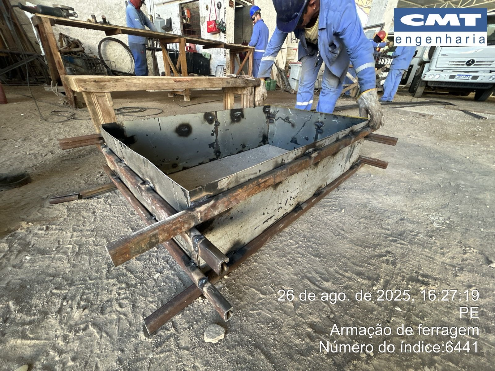
fôrma reutilizável em zinco
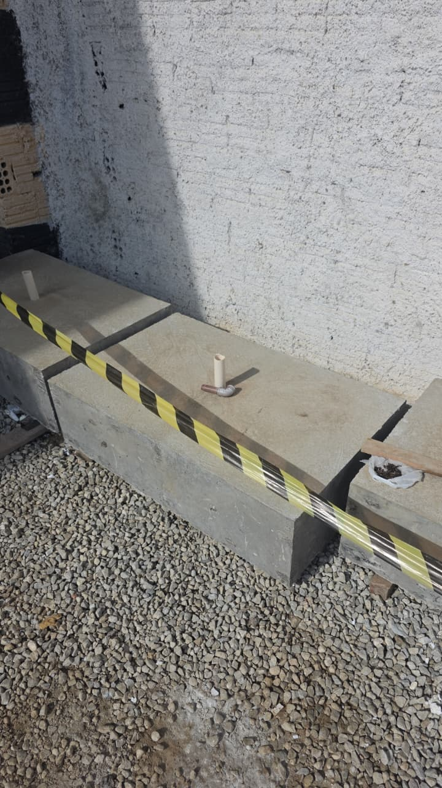
bloco confeccionado
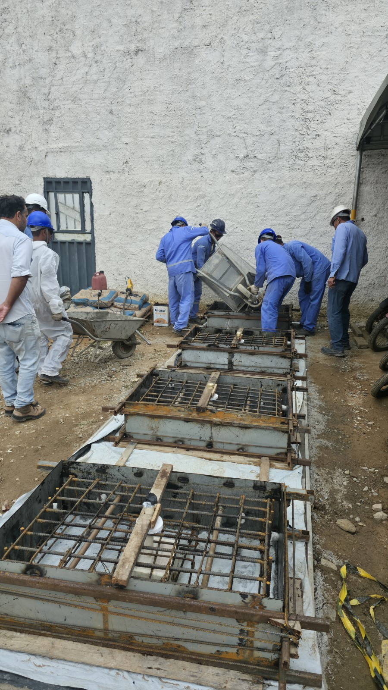
concretagem
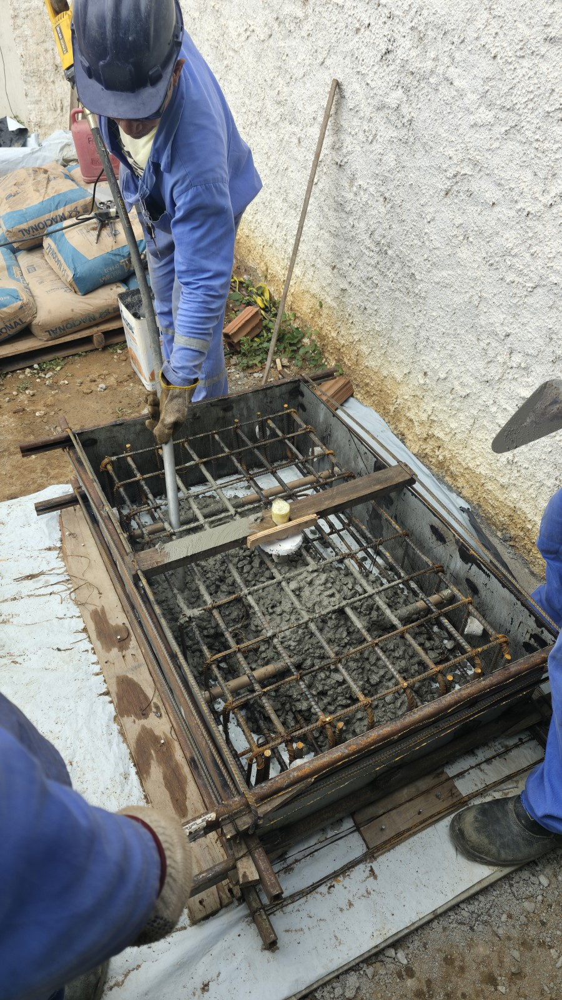
adensamento
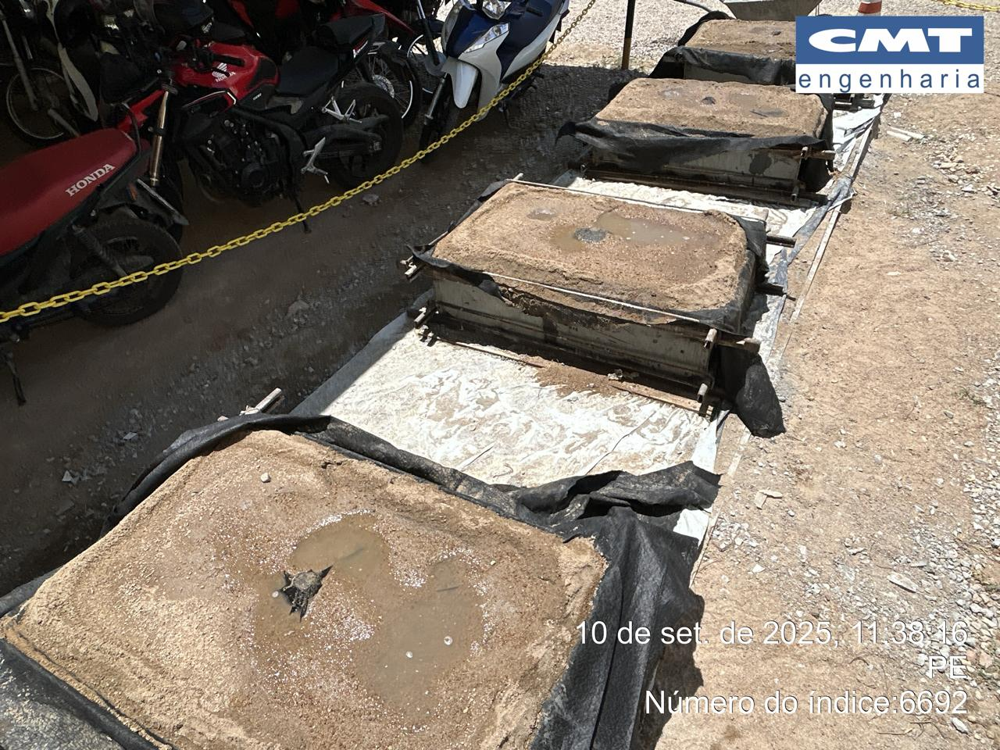
processo de cura
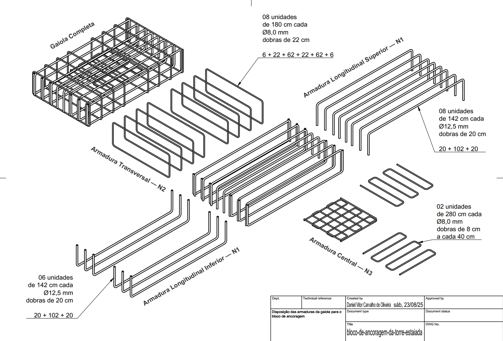
detalhamento isométrico da armadura
Instalação e impermeabilização com manta líquida
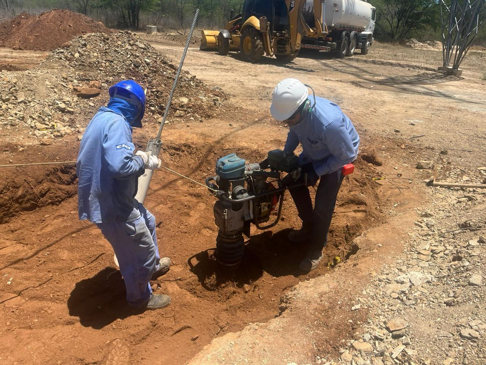
reaterro & compactação a percussão

aplicação da manta líquida
Retensionamento do estai
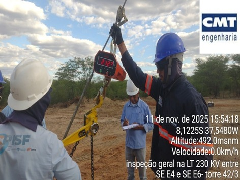
uso do dinamômetro
Amostragem e resistências obtidas
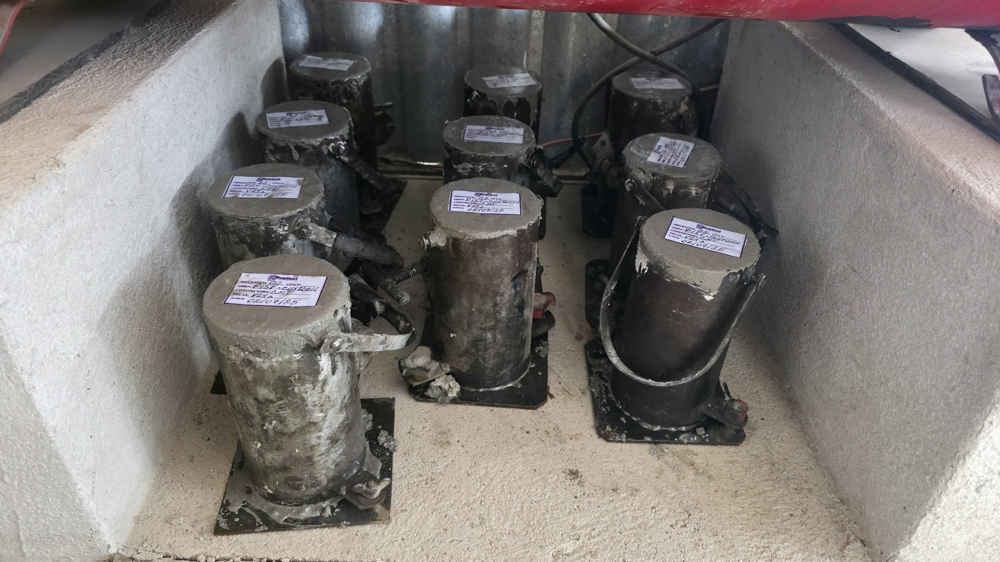
confecção
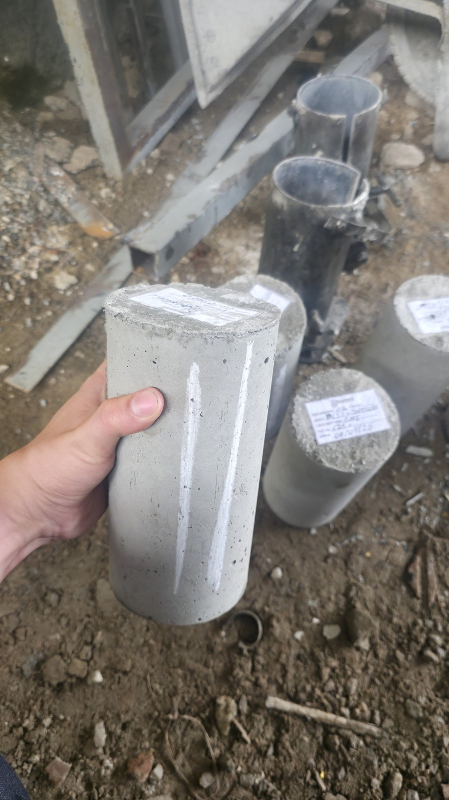
desmolde

cura
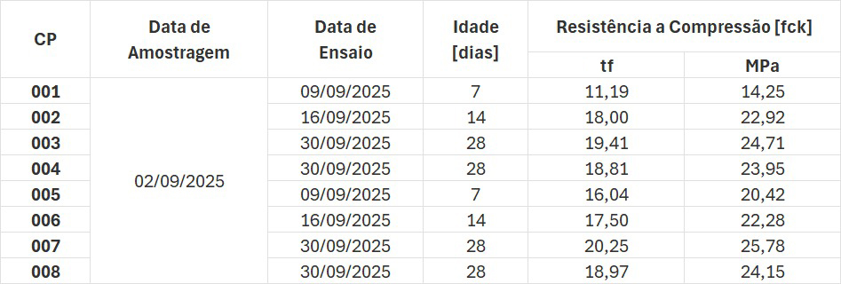
resistências obtidas através do rompimento axial em laboratório da Ruptest (NBR 5739)